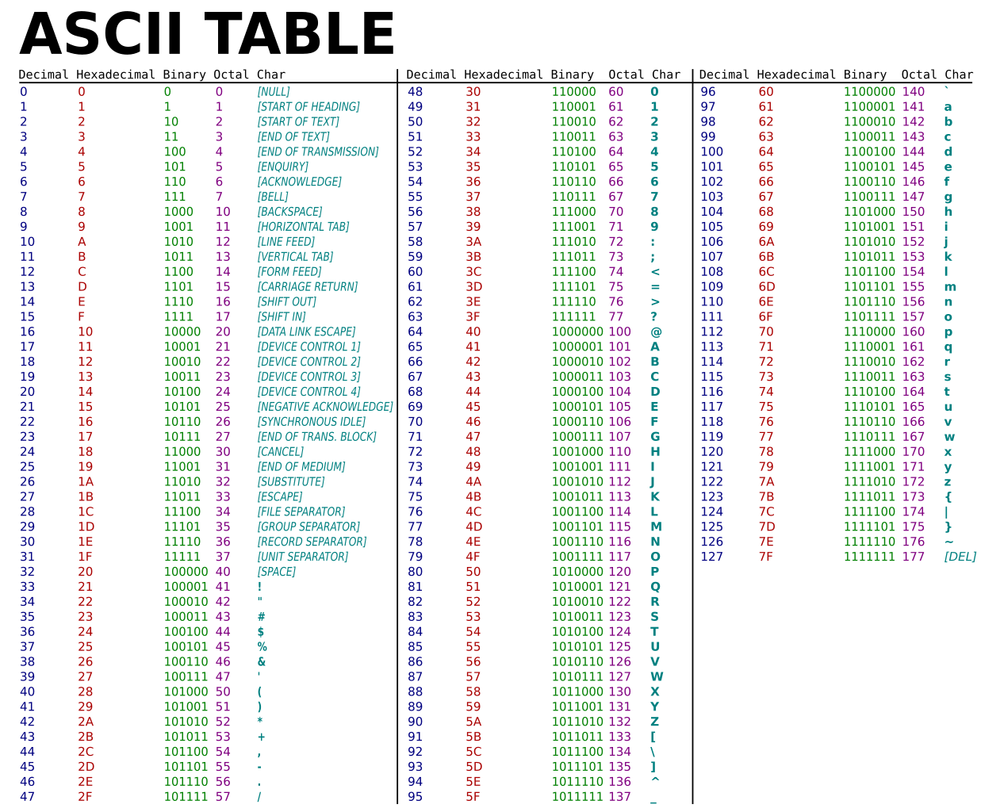

Het is belangrijk dat je begrijpt dat alle informatie, tekst, kommagetallen, afbeeldingen, spraak, video, opgeslagen worden als binaire getallen.
In een programma duiden we aan, met behulp van gegevenstypes zoals double, string, boolean, enzovoort hoe die binaire getallen precies geïnterpreteerd moeten worden.
Omdat die interpretatie over de hele wereld dezelfde zou zijn maakt men gebruik van afspraken. Een voorbeeld van zo'n afspraak is de ASCII tabel waarbij iedere letter gekoppeld is aan een binair getal. Typ je een hoofdletter A in, dan wordt die opgeslagen als 0100 0001 .

Alles wordt opgeslagen als een binair getal maar het is de afspraak die bepaalt hoe dit getal geïnterpreteerd wordt. In de ASCII tabel zie je bijvoorbeeld geen letters met een accent zoals é, ê, à, … staan. Hiervoor zijn er dan weer andere tabellen zoals UTF. Voor audio is er dan weer het mp3 formaat, voor video mp4…